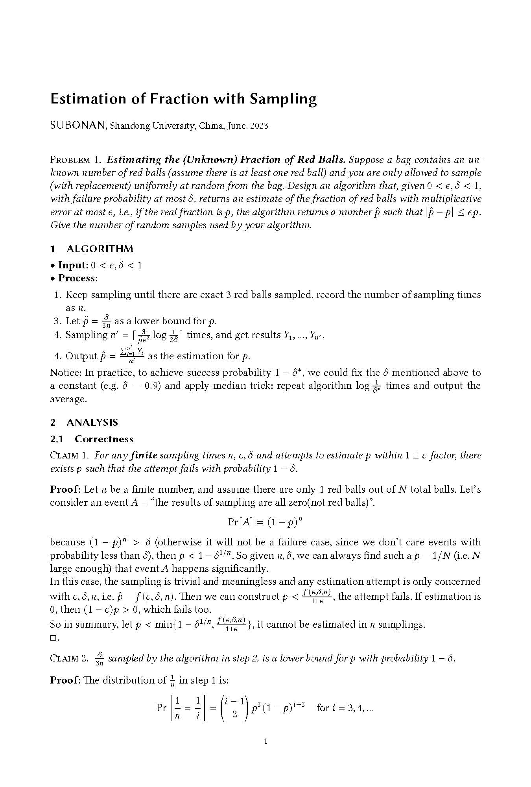
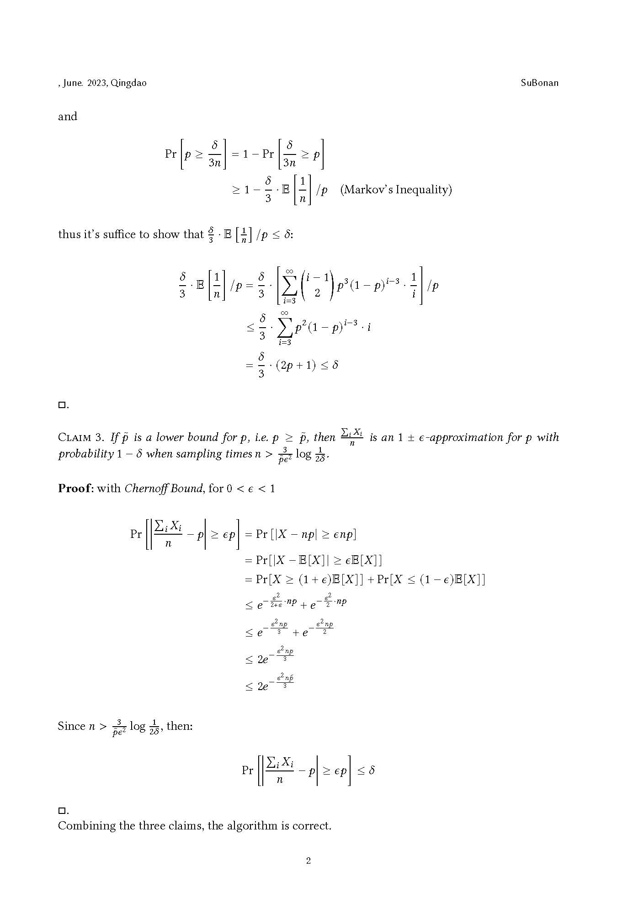
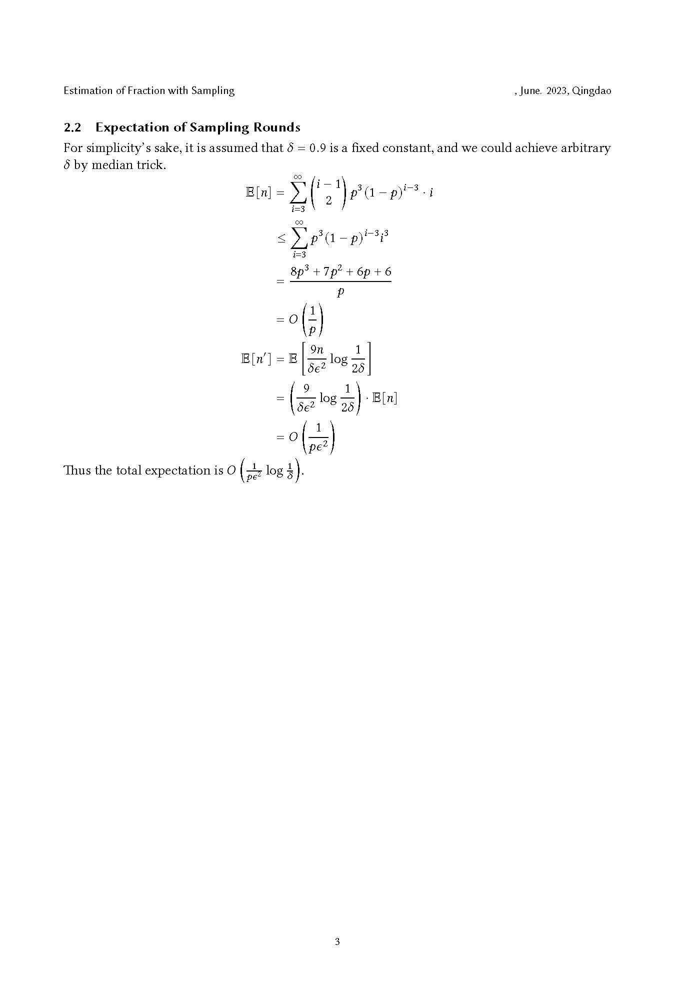

Such physical matters were nice, yet, to him, intelligence and passion born of living, the ability to move and be moved by subtleties of the mind and spirit, were what really counted.
# 图的连通分量
问题 ：给定一个无向图G = ( V , E ) G=(V,E) G = ( V , E )
我们考虑记n u n_u n u u u u A A A
∑ u ∈ A 1 n u = ∑ u ∈ A 1 ∣ A ∣ = 1 \sum_{u\in A}\frac{1}{n_u}=\sum_{u\in A}\frac{1}{|A|}=1
u ∈ A ∑ n u 1 = u ∈ A ∑ ∣ A ∣ 1 = 1
那么对于整个图，有：
∑ u ∈ V 1 n u = ∑ A ⊆ V ∑ u ∈ A 1 n u = ∑ A ⊆ V 1 = c \sum_{u\in V}\frac{1}{n_u}=\sum_{A\subseteq V}\sum_{u\in A}\frac{1}{n_u}=\sum_{A\subseteq V}1=c
u ∈ V ∑ n u 1 = A ⊆ V ∑ u ∈ A ∑ n u 1 = A ⊆ V ∑ 1 = c
其中，c c c
这看起来彷佛并没有简化问题，但是实际上我们有更有效的方式去估计1 n u \frac{1}{n_u} n u 1
n u ^ = min ( n u , 2 ε ) c ^ = ∑ u ∈ V 1 n u ^ \begin{aligned}
&\widehat{n_u}=\min(n_u,\frac{2}{\varepsilon})\\
&\widehat{c}=\sum_{u\in V}\frac{1}{\widehat{n_u}}
\end{aligned}
n u = min ( n u , ε 2 ) c = u ∈ V ∑ n u 1
很显然，求n u ^ \widehat{n_u} n u n u n_u n u 2 ε \frac{2}{\varepsilon} ε 2 n u ^ \widehat{n_u} n u O ( d ε ) O(\frac{d}{\varepsilon}) O ( ε d ) d d d
下面我们证明，n u ^ \widehat{n_u} n u n u n_u n u
对于每个u ∈ V u\in V u ∈ V ∣ 1 n u ^ − 1 n u ∣ ≤ ε 2 \left | \frac{1}{\widehat{n_u}}-\frac{1}{n_u}\right |\leq\frac{\varepsilon}{2} ∣ ∣ ∣ ∣ n u 1 − n u 1 ∣ ∣ ∣ ∣ ≤ 2 ε ∣ c ^ − c ∣ ≤ ε n 2 |\hat{c}-c|\leq\frac{\varepsilon n}{2} ∣ c ^ − c ∣ ≤ 2 ε n
证明：
若n u < 2 ε n_u<\frac{2}{\varepsilon} n u < ε 2 n u ^ = n u \widehat{n_u}=n_u n u = n u
否则，就有：
0 < 1 n u ≤ ε 2 = 1 n u ^ 0<\frac{1}{n_u}\leq\frac{\varepsilon}{2}=\frac{1}{\widehat{n_u}}
0 < n u 1 ≤ 2 ε = n u 1
故1 n u \frac{1}{n_u} n u 1 1 n u ^ \frac{1}{\widehat{n_u}} n u 1 ( 0 , ε 2 ] (0,\frac{\varepsilon}{2}] ( 0 , 2 ε ] □ \square □
对此我们仍不满意，我们不想遍历u ∈ V u\in V u ∈ V ∑ u ∈ V 1 n u ^ \sum_{u\in V}\frac{1}{\widehat{n_u}} ∑ u ∈ V n u 1 V V V r r r u 1 , . . . , u r u_1,...,u_r u 1 , . . . , u r
c ~ = n ⋅ ( 1 r ∑ i = 1 r 1 n u i ^ ) \tilde{c}=n\cdot\left (\frac{1}{r}\sum_{i=1}^r\frac{1}{\widehat{n_{u_i}}}\right )
c ~ = n ⋅ ( r 1 i = 1 ∑ r n u i 1 )
作为u u u
这样做为什么对呢？我们需要用到 Chernoff Bound ：
Theorem(Chernoff Bound) ：令δ ∈ [ 0 , 1 ] \delta\in[0,1] δ ∈ [ 0 , 1 ] X 1 , . . , X r X_1,..,X_r X 1 , . . , X r [ 0 , 1 ] [0,1] [ 0 , 1 ] E [ X 1 ] = . . . = E [ X r ] = p \mathbb{E}[X_1]=...=\mathbb{E}[X_r]=p E [ X 1 ] = . . . = E [ X r ] = p S = 1 r ∑ i = 1 r X i S=\frac{1}{r}\sum_{i=1}^rX_i S = r 1 ∑ i = 1 r X i
Pr [ ∣ S − p ∣ ≥ δ p ] ≤ e − Ω ( r p δ 2 ) \text{Pr}[|S-p|\geq\delta p]\leq e^{-\Omega(rp\delta^2)}
Pr [ ∣ S − p ∣ ≥ δ p ] ≤ e − Ω ( r p δ 2 )
上述定理说明的是，随着E [ X i ] = p \mathbb{E}[X_i]=p E [ X i ] = p δ \delta δ
于是我们令X 1 , . . . , X r X_1,...,X_r X 1 , . . . , X r u u u 1 n u ^ \frac{1}{\widehat{n_{u}}} n u 1
p = E [ X i ] = ∑ u ∈ V 1 n ⋅ 1 n u ^ = c ^ n p=\mathbb{E}[X_i]=\sum_{u\in V}\frac{1}{n}\cdot\frac{1}{\widehat{n_u}}=\frac{\widehat{c}}{n}
p = E [ X i ] = u ∈ V ∑ n 1 ⋅ n u 1 = n c
令δ = ε 2 \delta=\frac{\varepsilon}{2} δ = 2 ε S = 1 r ∑ i = 1 r 1 n u i ^ S=\frac{1}{r}\sum_{i=1}^r\frac{1}{\widehat{n_{u_i}}} S = r 1 ∑ i = 1 r n u i 1 c ~ = n ⋅ S \tilde{c}=n\cdot S c ~ = n ⋅ S ε 2 ≤ 1 n u ^ ≤ 1 \frac{\varepsilon}{2}\leq\frac{1}{\widehat{n_u}}\leq 1 2 ε ≤ n u 1 ≤ 1
ε n 2 ≤ c ^ ≤ n ⇒ ε 2 ≤ c ^ n = 0 ≤ 1 \frac{\varepsilon n}{2}\leq\widehat{c}\leq n\Rightarrow \frac{\varepsilon}{2}\leq\frac{\widehat{c}}{n}=0\leq 1
2 ε n ≤ c ≤ n ⇒ 2 ε ≤ n c = 0 ≤ 1
所以我们可以推导c ~ \tilde{c} c ~ c ^ \widehat{c} c r = b ε 3 r=\frac{b}{\varepsilon^3} r = ε 3 b b b b
Pr [ ∣ c ~ − c ^ ∣ ≥ ε c ^ 2 ] = Pr [ ∣ c ~ n − c ^ n ∣ ≥ ε c ^ 2 n ] = Pr [ ∣ c ~ n − c ^ n ∣ ≥ δ p ] ≤ exp ( − Ω ( b ε 3 p δ 2 ) ) = exp ( − Ω ( b ε 3 ⋅ c ^ n ⋅ ( ε 2 ) 2 ) ) ≤ exp ( − Ω ( b ε 3 ⋅ ε 2 ⋅ ( ε 2 ) 2 ) ) = exp ( − Ω ( b 8 ) ) \begin{aligned}
\text{Pr}\left [ |\tilde{c}-\widehat{c}|\geq \frac{\varepsilon\widehat{c}}{2}\right ]
&=\text{Pr}\left [ \left |\frac{\tilde{c}}{n}-\frac{\widehat{c}}{n}\right |\geq \frac{\varepsilon\widehat{c}}{2n}\right ]\\
&=\text{Pr}\left [ \left |\frac{\tilde{c}}{n}-\frac{\widehat{c}}{n}\right |\geq \delta p\right ]\\
&\leq \text{exp}\left ( -\Omega\left(\frac{b}{\varepsilon^3}p\delta^2\right)\right )\\
&=\text{exp}\left(-\Omega\left(\frac{b}{\varepsilon^3}\cdot\frac{\widehat{c}}{n}\cdot\left(\frac{\varepsilon}{2}\right)^2\right)\right)\\
&\leq\text{exp}\left(-\Omega\left(\frac{b}{\varepsilon^3}\cdot\frac{\varepsilon}{2}\cdot\left(\frac{\varepsilon}{2}\right)^2\right)\right)\\
&=\text{exp}\left(-\Omega\left(\frac{b}{8}\right)\right)
\end{aligned}
Pr [ ∣ c ~ − c ∣ ≥ 2 ε c ] = Pr [ ∣ ∣ ∣ ∣ ∣ n c ~ − n c ∣ ∣ ∣ ∣ ∣ ≥ 2 n ε c ] = Pr [ ∣ ∣ ∣ ∣ ∣ n c ~ − n c ∣ ∣ ∣ ∣ ∣ ≥ δ p ] ≤ exp ( − Ω ( ε 3 b p δ 2 ) ) = exp ( − Ω ( ε 3 b ⋅ n c ⋅ ( 2 ε ) 2 ) ) ≤ exp ( − Ω ( ε 3 b ⋅ 2 ε ⋅ ( 2 ε ) 2 ) ) = exp ( − Ω ( 8 b ) )
所以我们如果设置b b b
∣ c ~ − c ∣ ≤ ∣ c ~ − c ^ ∣ + ∣ c ^ − c ∣ ≤ ε c ^ 2 + ε n 2 ≤ ε n \begin{aligned}
|\tilde{c}-c|&\leq|\tilde{c}-\hat{c}|+|\hat{c}-c|\\
&\leq\frac{\varepsilon\hat{c}}{2}+\frac{\varepsilon n}{2}\\
&\leq \varepsilon n
\end{aligned}
∣ c ~ − c ∣ ≤ ∣ c ~ − c ^ ∣ + ∣ c ^ − c ∣ ≤ 2 ε c ^ + 2 ε n ≤ ε n
结合上述说明，上述采样、估计算法给出一了一个ε n \varepsilon n ε n O ( r ⋅ d ε ) = O ( b d ε 4 ) O(r\cdot\frac{d}{\varepsilon})=O(\frac{bd}{\varepsilon^4}) O ( r ⋅ ε d ) = O ( ε 4 b d )
因此我们得到结论：
令G = ( V , E ) G=(V,E) G = ( V , E ) d d d ε , β ∈ ( 0 , 1 ) \varepsilon,\beta\in(0,1) ε , β ∈ ( 0 , 1 ) C ( G ) C(G) C ( G ) G G G 1 − β 1-\beta 1 − β C ^ ( G ) \widehat{C}(G) C ( G )
C ( G ) − ε ∣ V ∣ ≤ C ^ ( G ) ≤ C ( G ) + ε ∣ V ∣ C(G)-\varepsilon|V|\leq\widehat{C}(G)\leq C(G)+\varepsilon|V|
C ( G ) − ε ∣ V ∣ ≤ C ( G ) ≤ C ( G ) + ε ∣ V ∣
若输入是邻接矩阵，那么算法的时间复杂度为O ( ε − 4 d log ( 1 / β ) ) O(\varepsilon^{-4}d\log(1/\beta)) O ( ε − 4 d log ( 1 / β ) )
# 估计红球比例

